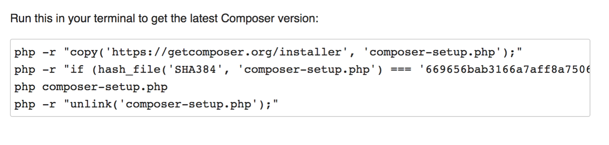
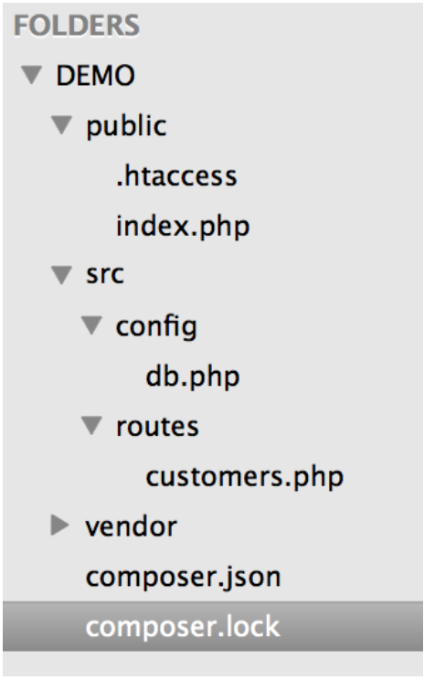
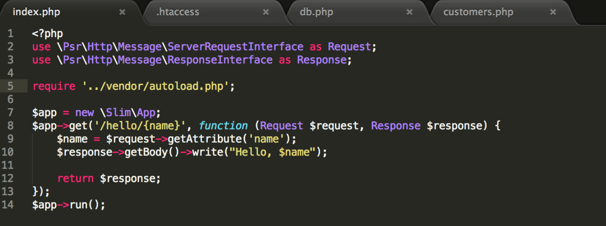

Overview
This is a bit of an advanced tutorial where we will implement four key concepts via the first hand approach. I will do my best to keep things as straight forward as I can, but we need to get to grips with PHP, REST messaging, JSON data interchange and managing a mySQL database. There are a lot of things going on, so I will give a high level overview in this paragraph then we will just get straight to it.
Installing the required Software
Composer
You can get Composer here however the main issue here is actually getting composer to work (if you use mac). After running the suggested terminal script like below, you should try to input the command composer to see if it actually works. 
$ mv composer.phar /usr/local/bin/composerNow you need to install a platform that will allow you to set up a server on your own computer (Apache), to work with PHP and use PEARL. This can be done by installing either WAMP, MAMP or XAMP these are specifically for Windows, Mac and Linux respectively. Although XAMP now runs on all three operating systems. The link can be found here
The next step is to download an extension that allows you to initiate RESTful requests, this is a great way for debugging your API once set up. You can constantly fire in requests to add, delete, read and update data from your DATABASE provided by your API, this can be customer information, stock quantity etc. To do this its best to download RESTeasy extension on chrome. Simply click the apps icon in your chrome nav bar, go to the web store and enter RESTeasy in the search.It is offered by resteasy.venuedistrict.com and is a ‘developers tool’.
File Creation
To get started go ahead and create a file in your htdocs folder of your XAMP/WAMP/MAMP directory. You can do this via normal finder/window method, but to get practice with terminal do the following.
cd /applications/xampp/htdocsNow lets create our new folder
mkdir demoFirst set up a folder structure like the below, don’t worry about the ‘vendor’ file, this gets created in a later step when you install slimphp from command line. DEMO is the main folder directory, public is where the user comes into, and there is a .htaccess file which we will insert some code to help shorten our URL. SRC directory, has a config folder where we contain our database settings, routes is where we contain our actual script for processing customers.

INSTALL SLIMPHP and Create Our Home Script
Next in order to add our vendor files (including the libs that lets us handle JSON) we should download a PHP tool, slimPHP, the easiest way to do this is to run the suggested command from the SlimPHP site for mac and the current script its
composer require slim/slim "^3.0"Now its time to start creating some files, I am using sublime to do my coding and file creation but you can use brackets notepad ++ or many others. In the DEMO folder, create an index.php this is where the main php scripts are going to be written and paste in the example from slimphp website in getting started.

When we create a restful API we create routes that deal with requests and response objects, that is what we are doing in the first two lines, we are dealing with the request/response objects. So every SLIM application/route is given these object as the argument for the call back routine. SLIM supports PSR7 the php standard for messaging, a great approach for writing apps. Autoload.php is created by composer and allows us to refer to SLIM dependencies. $app-> allows us to create our route. in this case its /hello/name
We then compose the response and return it. Finally we need to do the run command at the end to make it actually work. In our case we modify the require statement to add ../ as we are in the sub directory.
STARTING AND STOPPING YOUR SERVER